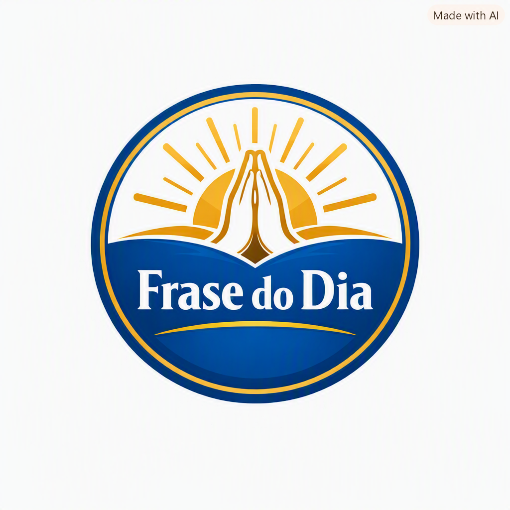

Frase do Dia
Fé, motivação e superação para o seu dia
Todas
Fé
Motivação
Superação
Fé
Carregando...
Reflexão:
🔀 Outra frase
❤️
📲 Compartilhar no WhatsApp
Ver minhas frases favoritas ⭐
⭐ Suas frases favoritas
Fechar